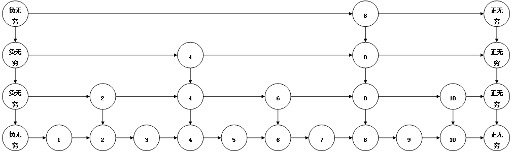

跳跃表
先看下面这个图。

这里的数据结构就是跳跃表。这个结构比较简单，在底层有一个有序链表，链表的两端有一个哨兵结点。在第二层也是一个有序链表，它两端必须有两个哨兵结点，其余的元素均来自下一层，并且，对于每一个元素，都有一个指针指向下一层中相同的元素。
先看看在这样一个数据结构中的一些基本操作。
查找：首先从顶层开始查找，先找到第一个小于等于查找值的结点，如果该结点的值等于查找值，直接返回true，否则继续向下一层查找。在下一层，递归的执行该操作，如果在最后一层也没有找到，返回false。
插入：根据查找的算法，在底层找到第一个小于插入值的结点，然后在结点后面插入一个新结点。插入该结点后，抛一次硬币（随机），如果为正面，在上一层插入一个结点，然后再抛一次硬币，如果为正面，继续在上一层插入一个结点，直到抛出反面。 删除：在每一层删除要删除的结点。
跳跃表在查找、插入、删除的期望运行时间都是，跟红黑树是一个级别，但跳跃表的实现比红黑树要简单很多。下面是具体的代码。
#include<bits/stdc++.h>
using namespace std;
class SkipList{
private:
struct Node{
int value;
Node *next;
Node *down;
Node(int value_):value(value_),next(NULL),down(NULL){}
};
Node *first; //记录第一层的起始和结束结点
Node *last;
int level;
Node* insert(int value, Node *node){
while(node->next->value <= value){ //找到第一个小于等于插入值的位置
node = node->next;
}
if(node->value == value){ // 不处理重复情况
return NULL;
}
if(node->down == NULL){ // 最后一层
Node *newNode = new Node(value);
Node *next = node->next;
node->next = newNode;
newNode->next = next;
if(rand()%2 == 1){ //随机判断是否需要加入到上一层
return newNode;
}
return NULL;
}
Node *ret = insert(value,node->down); //不是最后一层，向下一层插入
Node *newNode = NULL;
if(ret != NULL){
// 需要加入到这一层
Node *next = node->next;
newNode = new Node(ret->value);
node->next = newNode;
newNode->down = ret;
node->next = newNode;
newNode->next = next;
}
if(newNode != NULL && rand() % 2 == 1){
return newNode;
}
return NULL;
}
public:
SkipList(){
/* 构造开始和结束 */
first = new Node(INT_MIN);
last = new Node(INT_MAX);
first->next = last;
level = 1;
// srand(time(NULL));
}
~SkipList(){
while(first != NULL){
Node *first1 = first->down;
Node *last1 = last->down;
Node *node = first;
while(node != NULL){
Node *next = node->next;
delete node;
node = next;
}
first = first1;
last = last1;
}
}
void insert(int value){
Node *ret = insert(value,first);
while(ret != NULL){
Node *first1 = new Node(INT_MIN);
Node *last1 = new Node(INT_MAX);
Node *newNode = new Node(ret->value);
first1->next = newNode;
newNode->next = last1;
newNode->down = ret;
first1->down = first;
last1->down = last;
first = first1;
last = last1;
level++;
if(rand() % 2 == 0){
ret = NULL; // 判定失败
}else{
ret = newNode; //判定成功
}
}
}
bool find(int value){
Node *node = first;
while(node != NULL){
//在每一层都走到第一个小于等于查找值的位置
while(node->next->value <= value){
node = node->next;
}
if(node->value == value){
return true;
}
node = node->down; //进入下一层
}
return false;
}
void remove(int value){
Node *node = first;
while(node != NULL){
//在每一层都走到第一个小于value的位置
while(node->next->value < value){
node = node->next;
}
if(node->next->value == value){
//删除
Node *rmNode = node->next;
node->next = rmNode->next;
delete rmNode;
}
node = node->down; //进入下一层
}
//检查空链条
while(first->down != NULL && first->next == last){
Node *rmFirst = first;
Node *rmLast = last;
first = first->down;
last = last->down;
delete rmFirst;
delete rmLast;
level--;
}
}
void show(){
Node *first1 = first;
Node *last1 = last;
cout<<"total level: "<<level<<endl;
int index = 1;
while(first1 != NULL){
cout<<"level "<<index<<": ";
Node *node = first1->next;
while(node != last1){
cout<<node->value<<" ";
node = node->next;
}
cout<<endl;
first1 = first1->down;
last1 = last1->down;
index++;
}
}
};
int main(int argc, char const *argv[])
{
SkipList skipList;
for(int i = 0;i<10;i++){
skipList.insert(i);
}
skipList.show();
skipList.remove(7);
skipList.show();
for(int i=0;i<20;i++){
cout<<skipList.find(i)<<" ";
}
cout<<endl;
system("pause");
return 0;
}
这里的代码是我根据《算法导论》的公开课的课程写的，感觉这个数据结构还是挺有意思的。